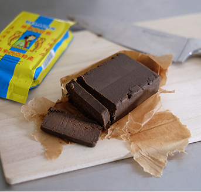
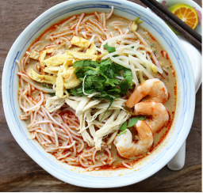
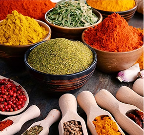

Kolo Mee
A Sarawakian staple, brought by Hakka settlers and known for its springy noodles and fragrant shallot oil.

Uses Sarawak ingredients like BELACAN and wild ferns.

Home to Kolo Mee, Sarawak Laksa, and Leicha Mee Sua.

Blends Chinese, indigenous, and Malay flavours.

Less oily, with fresh, natural seasoning.
Sarawak Chinese cuisine is arich blendof traditional Chinese flavors with local Sarawakian influences.
Sarawak’s food scene is a vibrant mix of indigenous, Malay, and Chinese influences, creating unique flavors and dishes found nowhere else. From hearty laksa to flavorful jungle produce, every dish tells a story of tradition and culture.
While Sarawak’s cuisine is diverse, this website focuses specifically on the rich and delicious world of Sarawak Chinese food.